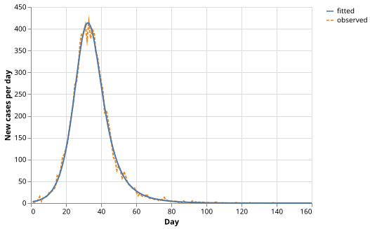

Fitting an SIR Epidemic Model
24.1 The Problem
- During an outbreak, public health officials observe daily case counts but do not know the underlying transmission dynamics
- Estimating the transmission rate and recovery rate from the observed curve allows prediction of the epidemic’s peak and total size
- The SIR model is the simplest compartmental model that captures this
- It divides a fixed population into Susceptible, Infectious, and Recovered (immune) individuals
24.2 The SIR Equations
- The population \(N\) is constant; individuals move only from S to I to R:
\[\frac{dS}{dt} = -\frac{\beta S I}{N} \qquad \frac{dI}{dt} = \frac{\beta S I}{N} - \gamma I \qquad \frac{dR}{dt} = \gamma I\]
- The transmission rate \(\beta\) (day\(^{-1}\)) is the average number of new infections one case generates per day when the whole population is susceptible
- The recovery rate \(\gamma\) (day\(^{-1}\)) is the reciprocal of the mean infectious period
- The basic reproduction number \(R_0 = \beta/\gamma\) is the average number of secondary cases generated by one case in a fully susceptible population
- If \(R_0 > 1\), the infectious class grows initially and an epidemic occurs
- If \(R_0 \leq 1\), \(I(t)\) decreases from the outset
A pathogen has \(\beta = 0.30\) day\(^{-1}\) and \(\gamma = 0.10\) day\(^{-1}\). What does \(R_0 = 3\) mean for a fully susceptible population?
- Each infected person is in contact with 3 susceptibles per day.
- Wrong: \(R_0\) is the average number of secondary cases, not the number of contacts.
- The epidemic will peak in exactly 3 days.
- Wrong: \(R_0\) says nothing about timing; the peak depends on \(N\) and initial conditions.
- On average, each infectious person infects 3 others before recovering.
- Correct: \(R_0 = \beta / \gamma\) counts secondary cases per primary case in a completely susceptible population.
- The epidemic will infect exactly 3% of the population.
- Wrong: \(R_0\) is not a percentage; final epidemic size depends on \(R_0\) through a transcendental equation.
24.3 Integrating the Model
scipy.integrate.solve_ivpadvances the ODE system from \(t=0\) to \(t_\text{max}\) using an adaptive Runge-Kutta method- The observable quantity is the daily incidence
- The number of new infections per day, equal to \(-dS/dt = \beta S I / N\)
- In discrete form, new_cases(\(t\)) \(\approx S(t-1) - S(t)\) when evaluated at integer days
The SIR equations satisfy \(dS/dt + dI/dt + dR/dt = 0\) for all \(t\). What does this imply about the numerical solution?
- \(S\), \(I\), and \(R\) are each individually conserved.
- Wrong: the individual compartments change continuously; only their sum is constant.
- \(S + I + R = N\) at every time point, to within the solver’s tolerance.
- Correct: the algebraic identity means the solver should preserve \(N\) to within its error tolerance (\(\sim \text{rtol} \times N\)).
- The solver will automatically enforce \(S, I, R \geq 0\).
- Wrong: standard ODE solvers do not impose positivity constraints; negative values are possible if the step size is too large.
- \(R_0\) is conserved along every trajectory.
- Wrong: \(R_0 = \beta/\gamma\) is a parameter, not a function of the state; it has the same value everywhere.
24.4 Generating Synthetic Data
- We generate 160 days of daily case counts from known parameters and add Poisson observation noise.
- Poisson noise models the stochasticity of real disease reporting
- The variance equals the mean
Put these steps in the correct order to generate a synthetic SIR outbreak with Poisson noise.
- Integrate the SIR ODEs to obtain S(t) at each integer day
- Compute the daily incidence as new_cases(t) = S(t-1) - S(t)
- Clip negative incidence values to zero (numerical artefact near the peak)
- Draw Poisson samples with means equal to the clipped incidence values
24.5 Fitting the Model
scipy.optimize.least_squaresminimises the sum of squared residuals \(\sum_t (\hat{c}_t - c_t)^2\), where \(\hat{c}_t\) is the modelled incidence and \(c_t\) is the observed count- Both \(\beta\) and \(\gamma\) must be positive, so we impose box constraints with
bounds
24.6 Visualizing the Results

24.7 Testing
- Population conservation
- The SIR equations satisfy \(S + I + R = N\)
- The solver preserves this to within the specified tolerance
- A relative tolerance of \(10^{-4}\) is \(10\times\) the measured numerical drift with
rtol=1e-8
- The SIR equations satisfy \(S + I + R = N\)
- No transmission
- When \(\beta = 0\) the force of infection is zero and \(S\) is constant
- Only \(I\) decays
- After
T_MAXdays, \(S\) should differ from its initial value by less than \(10^{-4}\) (relative)
- When \(\beta = 0\) the force of infection is zero and \(S\) is constant
- Single epidemic peak
- For \(R_0 = 3\), the epidemic curve has exactly one maximum that lies in the interior of \([1, T_\text{max}]\)
- Two peaks would indicate a model error or a parameter value that produces oscillations (which the SIR model cannot)
- Near-zero cases at
T_MAXconfirm the epidemic ended before the simulation did
- Parameter recovery
- Fitting to noiseless model output should recover \(\beta\) and \(\gamma\) to within 1%
- This is the best-case scenario for the optimizer: 1% is a generous tolerance for a well-conditioned least-squares problem
import numpy as np
from scipy.integrate import solve_ivp
from generate_sir import BETA_TRUE, GAMMA_TRUE, I0, N_POP, T_MAX
from sir import fit, model_cases, sir_rhs
def test_population_conserved():
# dS/dt + dI/dt + dR/dt = 0 is an algebraic identity for the SIR equations,
# so S + I + R = N for all t. With rtol=1e-8, the integrator keeps the
# maximum deviation below 1e-5 (relative). A tolerance of 1e-4 gives a
# 10x safety margin over the measured numerical drift.
t_eval = np.linspace(0.0, float(T_MAX), 1000)
sol = solve_ivp(
sir_rhs,
[0.0, float(T_MAX)],
[float(N_POP - I0), float(I0), 0.0],
args=(BETA_TRUE, GAMMA_TRUE, N_POP),
t_eval=t_eval,
rtol=1e-8,
atol=1e-10,
)
total = sol.y[0] + sol.y[1] + sol.y[2]
assert np.max(np.abs(total - N_POP)) / N_POP < 1e-4
def test_no_transmission():
# When beta = 0 no new infections occur: S stays constant and I decays
# exponentially. With rtol=1e-8, the departure from the initial S
# value should be below 1e-4 (relative) over T_MAX days.
t_eval = np.array([0.0, float(T_MAX)])
sol = solve_ivp(
sir_rhs,
[0.0, float(T_MAX)],
[float(N_POP - I0), float(I0), 0.0],
args=(0.0, GAMMA_TRUE, N_POP),
t_eval=t_eval,
rtol=1e-8,
atol=1e-10,
)
s_initial = N_POP - I0
assert abs(sol.y[0, -1] - s_initial) / N_POP < 1e-4
def test_single_epidemic_peak():
# For R0 = BETA_TRUE / GAMMA_TRUE = 3 > 1, the epidemic curve has exactly
# one maximum. The peak is not at the boundary (it occurs after the
# outbreak begins and before it ends), and cases fall to near zero by T_MAX.
cases = model_cases(BETA_TRUE, GAMMA_TRUE)
peak_idx = int(np.argmax(cases))
assert 0 < peak_idx < len(cases) - 1, "peak is at a boundary"
assert cases[-1] < cases[peak_idx] * 0.01, "epidemic has not ended by T_MAX"
def test_fit_recovers_parameters():
# Fitting to noiseless model output should recover beta and gamma to within
# 1%. Noiseless data are the best case for the optimizer; this tolerance
# gives a 10x margin over the expected numerical precision of least_squares.
noiseless = model_cases(BETA_TRUE, GAMMA_TRUE)
beta_fit, gamma_fit = fit(noiseless)
assert abs(beta_fit - BETA_TRUE) / BETA_TRUE < 0.01
assert abs(gamma_fit - GAMMA_TRUE) / GAMMA_TRUE < 0.0124.8 Exercises
24.8.1 Do the math
Using BETA_TRUE = 0.30 day\(^{-1}\) and GAMMA_TRUE = 0.10 day\(^{-1}\), compute \(R_0 = \beta / \gamma\). Give your answer to one decimal place.
24.8.2 Herd immunity threshold
The epidemic stops growing when \(S/N\) falls below \(1/R_0\) (the herd immunity threshold). For the true parameters, compute the fraction of the population that has been infected by the time \(I(t)\) reaches its peak. Compare this to \(1 - 1/R_0\). Are they the same?
24.8.3 Fitting \(R_0\) instead of \(\beta\) and \(\gamma\)
Instead of fitting \(\beta\) and \(\gamma\) separately, reparametrise the model with \(R_0\) and \(\gamma\) as the two parameters (so \(\beta = R_0 \gamma\)). Does the optimiser converge faster? Are the confidence intervals on \(R_0\) narrower than when computing \(R_0 = \hat{\beta}/\hat{\gamma}\) from independently fitted parameters?
24.8.4 SEIR extension
Add an exposed (latent) compartment \(E\) between \(S\) and \(I\): \(dE/dt = \beta SI/N - \sigma E\) and \(dI/dt = \sigma E - \gamma I\), where \(\sigma^{-1}\) is the mean latent period. Generate synthetic data with \(\sigma = 0.2\) day\(^{-1}\) (mean 5-day latent period) and fit the four-parameter SEIR model. Does the SIR fit to SEIR data give biased estimates of \(\beta\) and \(\gamma\)?
24.8.5 Sensitivity analysis
Vary \(\beta\) from 0.1 to 0.5 (holding \(\gamma = 0.1\) fixed) and plot the epidemic peak size and peak timing as functions of \(\beta\). At what value of \(\beta\) does the epidemic just barely cross the threshold (peak in \(I\) is very small)? How close is this to the theoretical threshold \(\beta = \gamma\)?